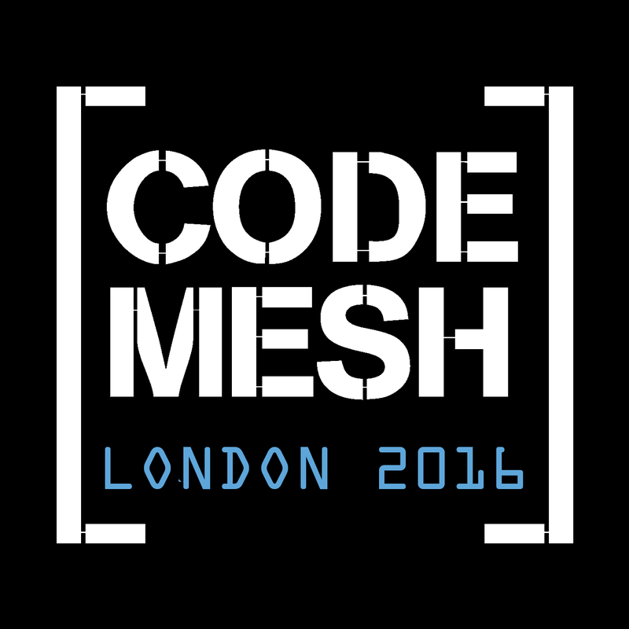
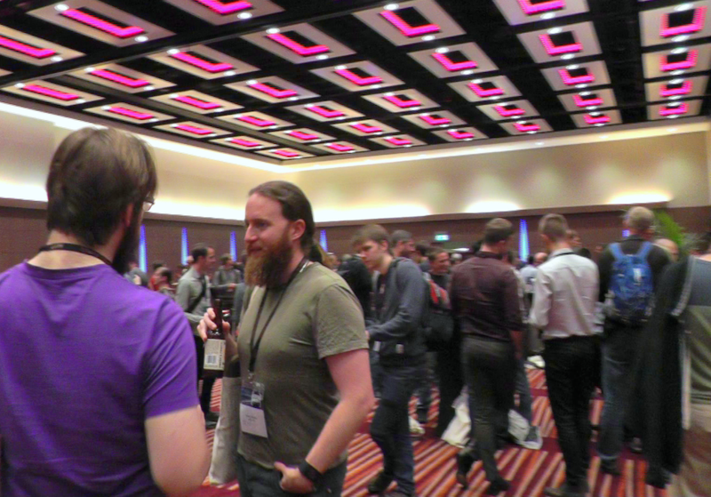

Code Mesh, the Alternative Programming Conference, focuses on promoting useful non-mainstream technologies to the software industry. The underlying theme is "the right tool for the job", as opposed to automatically choosing the tool at hand. By bringing together users and inventors of different languages and technologies (new and old), speakers will get the opportunity to inspire, to share experience, and to increase insight. Through presentations and case studies, we aim to raise awareness and extend the knowledge of all participants, mainstream and non-mainstream users alike.
Sam Aaron
Keynote: Distributed Jamming with Sonic Pi and ErlangCreator of @Sonic_Pi, Live Coding Musician
Joe Armstrong

Co-Inventor of Erlang

Conor McBride
Keynote: SpaceMonadsComputer & Information Sciences Lecturer @ University of Strathclyde
Jason Hemann
Implementing a microKanrenFunctional and constraint-logic programming expert, Indiana University
Rachel Reese

Senior Software Engineer at Jet.com, one of the founding @lambdaladies
Edwin Brady

Lecturer in Computer Science at the University of St Andrews
Neha Narula
The End of Data Silos: Interoperability via CryptocurrencyResearch Director of the Digital Currency Initiative @ MIT Media Lab
Francesco Cesarini

O'Reilly Author & Founder of Erlang Solutions
Christopher Meiklejohn

LASP Creator

Brendan McAdams
Workshop: Akka and Quaich: A "Serverless" Microframework for Event-driven Scala Programming on AWS LambdaReactive Architecture Lead at Lightbend
Claudia Doppioslash

Functional Programmer & Gamedev
Sargun Dhillon
Checmate: Lying, Cheating, and Winning with Containers in NetworkingDistributed Systems Specialist @ Mesosphere

Sean T Allen
How did I get here? Building Confidence in a Distributed Stream ProcessorVP of Engineering @ Sendence
Ben Stopford
Streaming, Database & Distributed Systems: Bridging the DivideData/Streaming Tech Specialist
Matthew Sackman
GoshawkDB: Programming with Persistent Distributed ObjectsTrying to learn from our past
Luke Marsden

Hacker. Occasional entrepreneur.

Máté Marjai

Coder By Day, Toddler Tamer By Night
Caitie McCaffrey
A Brief History of Distributed Programming: RPCBackend Brat & Distributed Systems Diva @ Twitter

Kevin Hammond

Functional Programming, Properties, Parallelism
Svetlana Filimonova

Developer @ ThoughtWorks

Laure Philips
How Web Programming is More Than a Server and Some ClientsPhD Student in Tierless Programs

Jessica Kerr

Infrastructure Developer at Stripe
Brian Troutwine

Software engineering, with ambitions toward reliability
November 3, 2016
Tap on hour to see the talks
08:00 - 09:00
Registration
09:00 - 09:10
Welcome to Code Mesh!
10:10 - 10:30
Tea and Coffee Break
12:05 - 13:35
Lunch
13:35 - 14:20 - London VI
Quaich: A "Serverless" Microframework for Event-driven Scala Programming on AWS Lambda
13:35 - 14:20 - London VII & VIII
14:25 - 15:10 - London VII & VIII
15:10 - 15:30
Tea and Coffee Break
15:30 - 16:15 - London VII & VIII
16:20 - 17:05 - London VII & VIII
A History of Space Stations: The Pleasures and Challenges of Living Where Life Shouldn't Be
16:20 - 17:05 - London VI
17:10 - 18:10 - London VII & VIII
18:10 - 20:10 - London VII & VIII
Lightning Talks & Conference Party
November 4, 2016
Tap on hour to see the talks
09:00 - 09:10
Welcome to Code Mesh!
09:10 - 09:55 - London I & II
Streaming, Database & Distributed Systems: Bridging the Divide
09:10 - 09:55 - London VI
The Sock Shop: Microservices from dev to prod with Docker and Kubernetes
09:55 - 10:15
Tea and Coffee Break
10:15 - 11:00 - London VII & VIII
10:15 - 11:00 - London I & II
11:05 - 11:50 - London VII & VIII
12:00 - 13:30
Lunch
14:20 - 15:05 - London I & II
How did I get here? Building Confidence in a Distributed Stream Processor
15:05 - 15:25
Tea and Coffee Break
17:00 - 17:10
Closing Notes
17:10 - 18:00
Leaving Drinks
Conference Party

Join us on 3 November for the Conference Party - an evening full of great company, snacks and specially selected craft beer.
Themes
The History and the Philosophy of Computer Science:
We all know a little bit of our industry's past, but it is increasingly impossible to keep track on this rich, alas short, heritage. In this track we aim to remind you of some of the amazing things that have happened, including first person accounts, holistic overviews or specific case reviews. At the same time, philosophy drives each of us, however we rarely give ourselves the time to decide if the way we reason about our technical lives is a way we still agree with. Lets explore this wonderful space.
Multicore & Parallelism:
The future of computing is Multi-core, massively multi-core. This track investigates hardware infrastructures, from embedded to super computers, from running programs on the bare metal to virtualization. When should you use what? What are the advantages and disadvantages of the various approaches? What is concurrent, and what is parallel? This track investigates them all, and is a must when deciding what hardware platform and technology stack to use.
Language Track:
Programming languages are in constant development, responding to the changing nature of computing problems and hardware infrastructure. Both old and new, languages have their strength and weaknesses, making them fit (or unfit) for particular jobs. Learn and exchange ideas with the inventors of today and tomorrow’s computing future, and ensure you equipped with the knowledge to make the right choice.
Infrastructure & Distribution:
Gone are the days of the mainframe; infrastructure software for the 21st Century needs to be distributed, scalable and flexible. How useful is an effective big data analytics algorithm if you can't move the data cheaply and efficiently, and what is the point of an instant messaging cluster if it will not scale linearly with demand? The speakers in this track have used non mainstream technologies for messaging backbones, computing clouds and massive clusters, streaming media and instant messaging. Come and find out how.
Next Generation Databases & Analytics:
Information is at the heart of Information Technology - it's right there in the name! It more critical today than ever that engineers and architects are proficient at storing, retrieving and leveraging data. This track focuses on modern tools and techniques for drawing valuable meaning from data, as well as storing and retrieving massive quantities of it! Look for talks that cover new databases, data architecture, and tools and libraries for analysis.
Venues
Conference (3-4 Nov): ILEC Conference Centre / Ibis Earls Court
47 Lillie Road, London, SW6 1UD
Situated a few minutes walk from Earls Court and Olympia Exhibition Centre, ILEC Conference Centre is a perfect base for business travellers. Its close proximity to the shopper’s paradise of Kensington and Knightsbridge and the stylish cafes and boutique of Chelsea also makes it a great place for leisure visitors to stay. The closest tube station, located within a 3-min walk, is West Brompton, served by the District line and London Overground.
Driving
ILEC is a quarter of a mile (400m) from the A4, providing easy access to the M4, M5 and M40.
Airport transfer times
Heathrow (LHR): 21 km
Approximately 30 minutes in light traffic. You can also reach the airport directly by London Underground, on the Piccadilly line.
Gatwick (LGW): 45 Km
Approximately an hour in light traffic. It is 40 minutes by train from West Brompton station. Direct shuttle available with Easy Bus.
London City (LCY): 21 km
Approximately 45 minutes in light traffic.
Public transport: London Underground
West Brompton and Earls Court stations are both within walking distance giving easy access to all central district of London and Heathrow Airport.
Workshops (2 Nov): The Cumberland Hotel
Great Cumberland Pl, London W1H 7DL
Just off busy Oxford Street, this luxury hotel is 2 minutes’ walk away from Hyde Park.
To reach The Cumberland Hotel by road…
From the Marble Arch monument, take the first left down Great Cumberland Place: you’ll find the entrance to The Cumberland Hotel on the left-hand side, just before you reach Marble Arch Tube station. APCOA parking is available nearby on Bryanston Street at an additional charge. To programme your sat-nav, use the postcode W1H 7DL.
For guests arriving in London by rail…
London Paddington station is 1.0 mile away.
London Underground: Take the Central line to Marble Arch Station. Turn right out of the station, then almost immediately right again into Great Cumberland Place; The Cumberland Hotel will be on your right.
To reach The Cumberland Hotel from the airport…
If you’re flying into London City Airport, The Cumberland Hotel is 11 miles away: take the Docklands Light Railway (DLR) to Bank Station, then the Central line to Marble Arch. From London Heathrow, we recommend the Heathrow Express: this runs direct from the airport to London Paddington in just 15 minutes (20 from Terminal 5) and there’s a train every quarter of an hour. The Gatwick Express runs a similar service into London Victoria. From either terminus, you can take the Underground to Marble Arch: The Cumberland Hotel is then about a minute’s walk away.